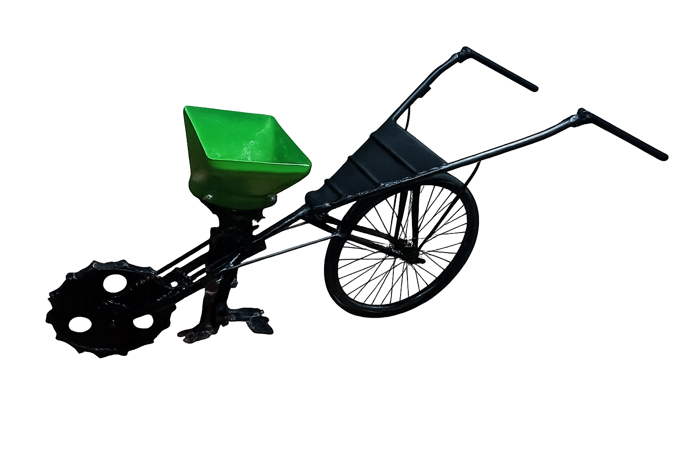
Praticidade, inovação e compromisso com quem faz o campo crescer.
O propósito da marca é desenvolver soluções práticas, acessíveis e eficientes que facilitem o trabalho dos pequenos produtores rurais. Buscamos unir inovação e simplicidade para tornar o plantio mais produtivo e acessível.
Como avaliação obrigatória da disciplina de Mecanização Agrícola, no Colégio Agrícola Estadual Adroaldo Augusto Colombo(CAEAAC), lecionada pela professora Carolina Binotto, é proposto a criação de uma plantadeira manual que consiga realizar plantio. Para confecção de nossa plantadeira(apelidada “Jhon Deera”), foram utilizadas peças de plantadeiras já fora de uso, peças encontradas em ferros-velhos, uma bicicleta inutilizada e pés de cadeira. Após, foi feita a solda e pintura da mesma, e então a confecção de uma logo e site apropriados. Email para contato: @kaevelyn29@gmail.com
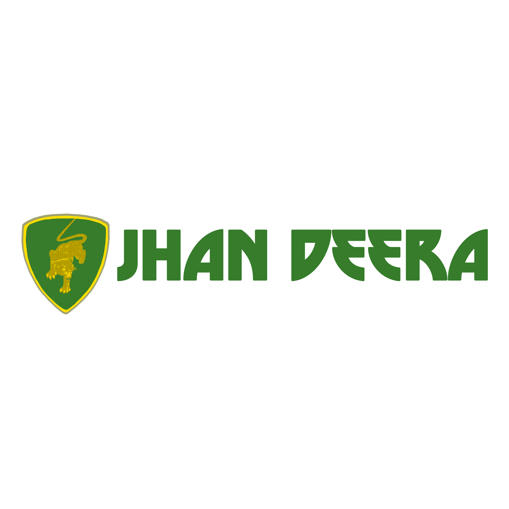

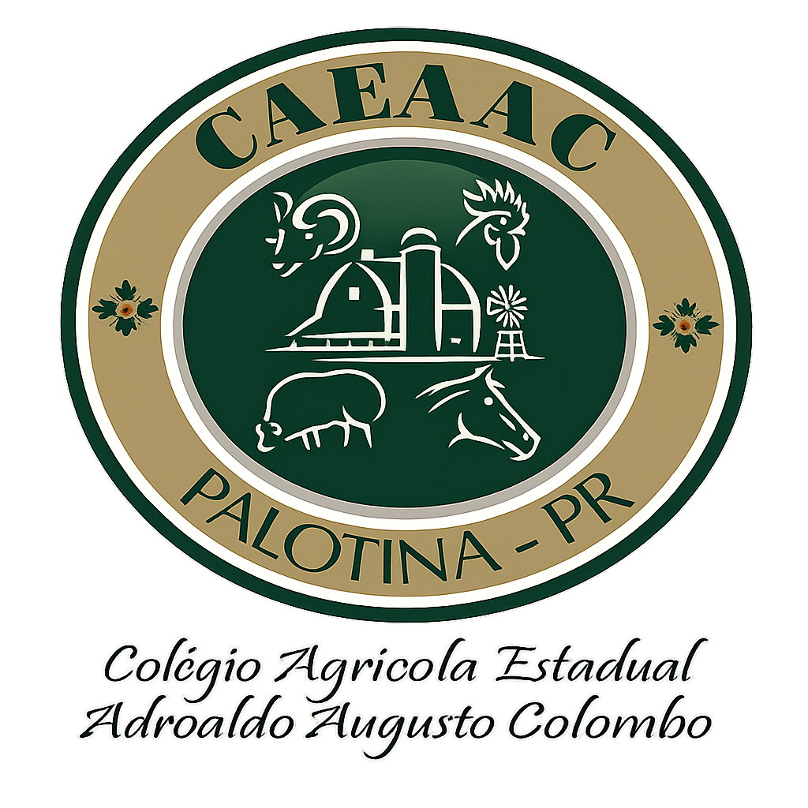
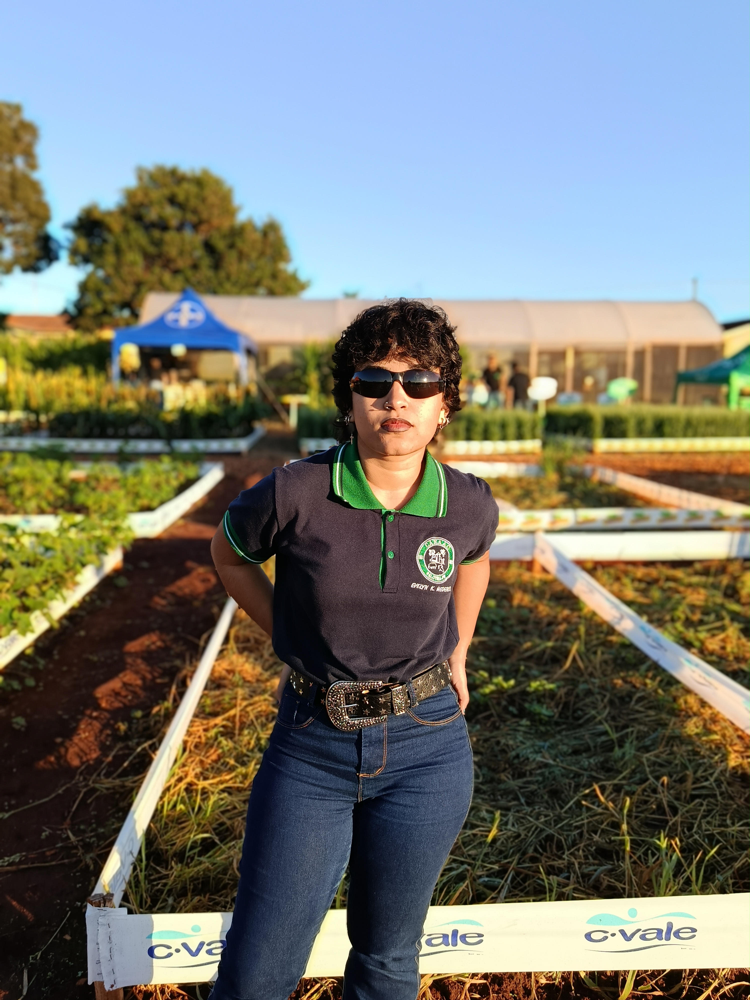
Evelyn Karoline Medeiros - Criadora da plantadeira.
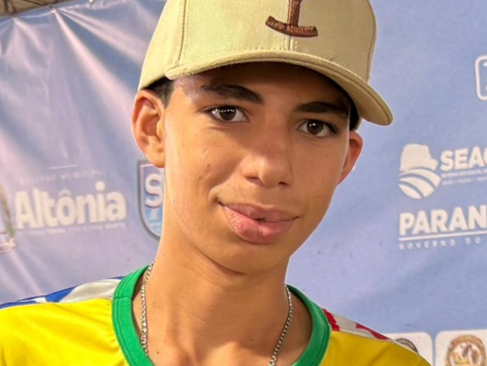
José Henrique do Vale Mendes - Criador da plantadeira.
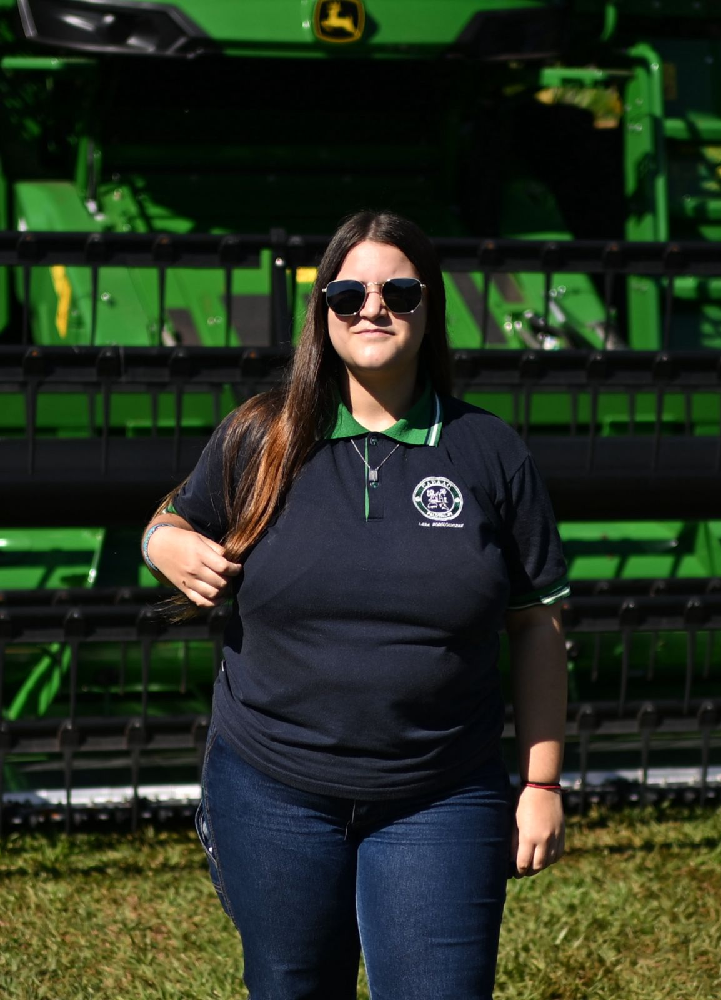
Lara Poroloniczak Peres - Criadora da plantadeira.
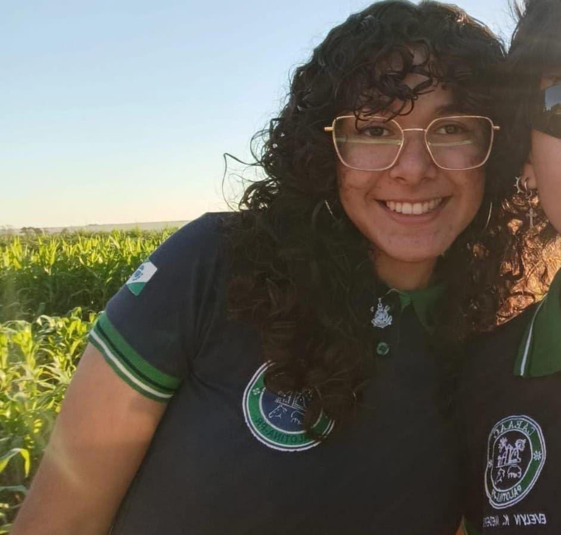
Laura de Souza Monteiro - Criadora da plantadeira.
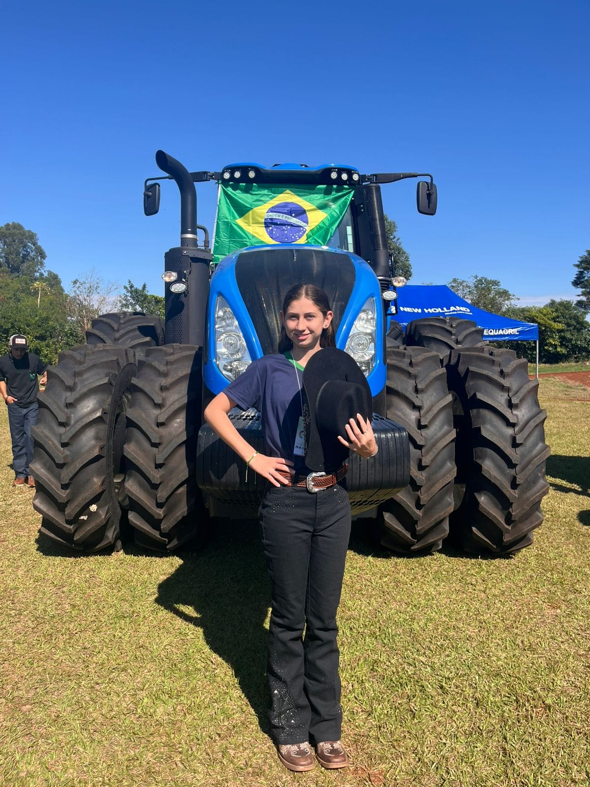
Natália da Silva Schnorr - Criadora da plantadeira.
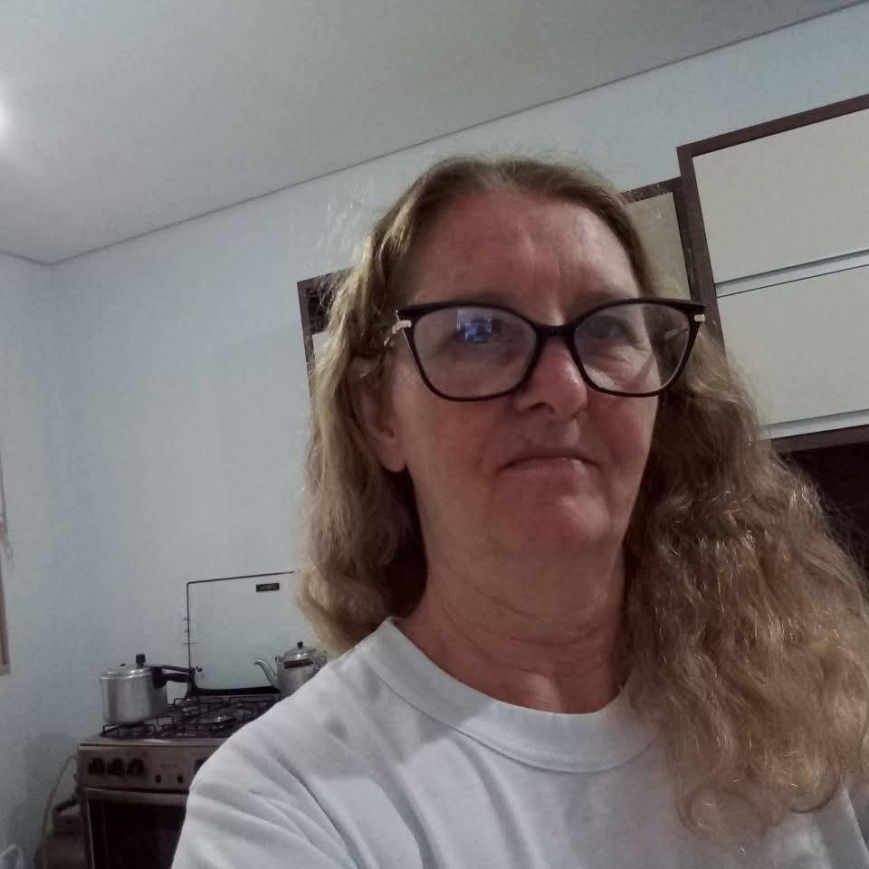
Cassia Tomio Lofh - Parceira(Doação da bicicleta)
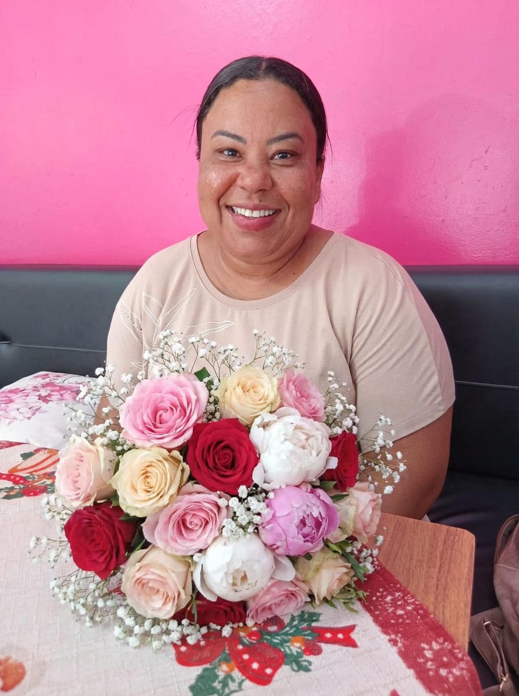
Dulce Alves de Matos - Parceira(Confecção)
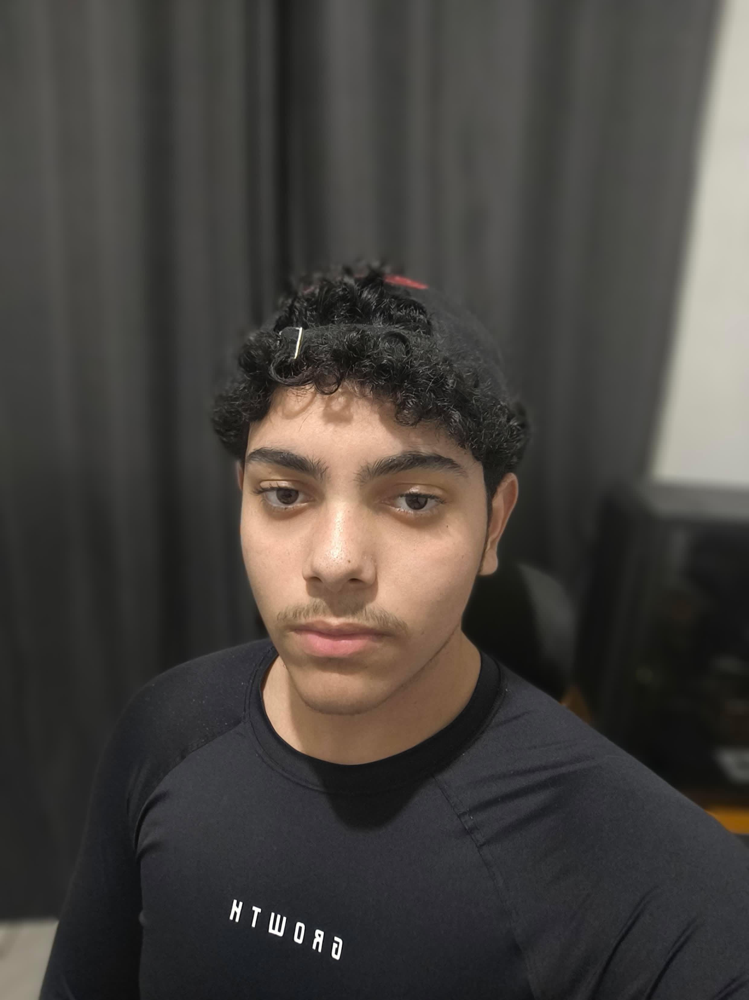
Pedro Luis dos Santos da Rosa - Parceiro(Criação do site)
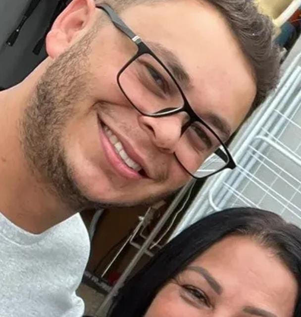
Rafael de Oliveira - Parceiro(Solda e pintura)